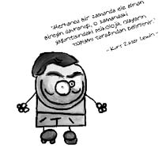

Kurt Zadek Lewin (1890-1947)
Alman asıllı Amerikalı psikolog. Geştaltçıdır. Modern sosyal psikolojinin kurucusu sayılır. Grup dinamiği kavramını ilk kez ortaya çıkaran odur. Önderlik konusunda ilk ciddî ve bilimsel çalışmaları yapmıştır. Matematik ve fizik okuyan Lewin, aldığı eğitimin etkisiyle “fiziksel alan” kavramını psikolojiye taşıyarak “psikolojik alan” kavramını ortaya atmıştır. Buna göre kişi, objektif gerçekliği farklı farklı değerlendirir. Psikolojik çevre, kişinin algıladığı çevredir.
İşletmelerde uygulanan planlı değişim sürecine ilişkin ilk model de Kurt Lewin tarafından geliştirilmiştir. Lewin’e göre, işletmede değişim üç aşamadan geçerek oluşmaktadır. Bu aşamalar çözülme, değişme ve yeniden dondurma aşamalarıdır. Çözülme aşamasında, değişime karşı olabilecek kişiler değişimin gerekliliği konusunda ikna edilir. Değişim aşamasında değişim fiilen gerçekleştirilir. Yeniden dondurma aşamasında, değişimin kalıcılığı sağlanır.

Irklara dair çalışmalar yapan bir komisyonun ırklara ve dinlere yönelik önyargıya karşı savaşmak için desteğini istemesi üzerine de Lewin “Duyarlılık Eğitimi” adı verilen bir çalışma hazırlayarak yüzyılın en önemli sosyal buluşunu gerçekleştirmiştir. Duyarlılık eğitimi sayesinde kişi hem kendi davranış ve tutumlarına karşı hem de başkalarının davranışlarına karşı duyarlılık kazanacaktır.
Lewin, ayrıca insanların kendi kararları gibi görünen şeylere katılma ve bu kararlara uygun davranma eğilimi gösterdiklerini göstermek üzere “Donma Etkisi” kavramını ortaya atmıştır. Buna göre, belirli bir konuda karar veren kişi, kendi kararının tuzağına düşerek aynı yönde davranmaya devam eder. Örneğin, yağmurlu bir günde evine dönmek için otobüs durağında on beş dakika bekleyen kişi, daha sonra “Bu kadar bekledim…” zihniyetiyle önünden geçen bir taksiye binmeyebilir. Yani bir bakıma burada insanın kendi kendini iknası söz konusudur.
Kendisi de 1947 yılında geçirdiği kalp krizi sonucu hayata veda eder.
Ne demiş Lewin...
• İyi bir teoriden daha pratik olan bir şey yoktur.
• Bir şeyi gerçekten anlamak istiyorsanız, onu değiştirmeye çalışın.